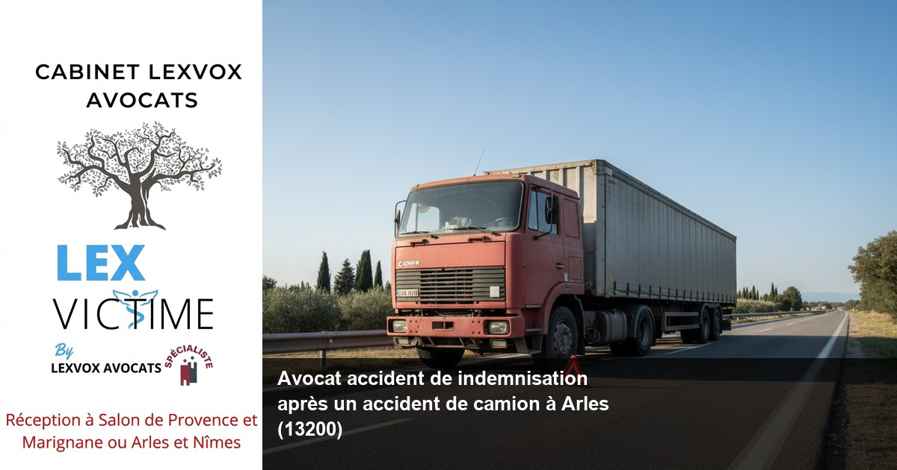

Accident de la route — Arles
Avocat accident de camion à Arles : indemnisation et dommage corporel

— Par Me Patrice Humbert, avocat au barreau d'Aix-en-Provence
Victime d'un accident de camion à Arles, vous cherchez un avocat accident de indemnisation pour défendre vos droits ? Le Cabinet LEXVOX AVOCATS, dirigé par Me Patrice Humbert, premier avocat certifié IA de France, vous accompagne dans votre procédure d'indemnisation. Avec plus de 20 ans d'expérience exclusive en dommage corporel et une spécialisation CNB, notre bureau d'Arles vous propose une consultation gratuite de 30 minutes. Contactez-nous au 04 90 54 58 10.
Obtenir la meilleure indemnisation possible : indemnisation des victimes et droit du dommage corporel à Arles
Lorsqu'un accident de camion survient sur les axes routiers d'Arles comme la RN113 ou la A54, les conséquences peuvent être dramatiques. En tant que victime d'un accident impliquant un poids lourd, vous avez droit à une réparation intégrale de l'ensemble de vos préjudices. Le droit du dommage corporel français garantit une indemnisation des victimes complète, couvrant tous les postes de préjudice reconnus par la jurisprudence.
Les spécificités des accidents de camion à Arles
La commune d'Arles, plus grande commune de France avec ses 758 km², présente des défis particuliers en matière de circulation des poids lourds. Les axes de transit comme la RN572 vers Saintes-Maries-de-la-Mer ou la liaison avec l'autoroute A54 voient passer quotidiennement de nombreux camions. Un accident de camion génère souvent des dommages corporels graves nécessitant l'intervention d'un avocat spécialisé.
L'importance du droit du dommage corporel
Le droit du dommage corporel constitue une branche spécialisée du droit civil français, régie notamment par les articles 1240 et suivants du Code civil. Cette spécialisation requiert une expertise approfondie des mécanismes d'indemnisation, des barèmes jurisprudentiels et des procédures amiables et contentieuses. Notre cabinet maîtrise parfaitement ces aspects techniques pour obtenir la meilleure indemnisation possible.
Accompagner par un avocat : un accident de la route et faire appel à un avocat à Arles
Face aux conséquences d'un accident de la route impliquant un camion, faire appel à un avocat spécialisé devient indispensable. L'accompagner par un avocat expérimenté vous permet de bénéficier d'une défense des victimes adaptée aux spécificités de votre dossier.
Pourquoi choisir un avocat expert en accidents de camion ?
Un accident de la route avec un poids lourd présente des particularités techniques et juridiques complexes. Les enjeux assurantiels sont considérables, les préjudices souvent majeurs, et les compagnies d'assurance mobilisent des équipes d'experts aguerris. Seul un avocat spécialisé peut équilibrer ce rapport de force.
Les avantages de la présence d'un avocat dès les premiers jours
L'assistance d'un avocat dès les premiers jours suivant l'accident permet de :
- Préserver les preuves et témoignages
- Organiser les premiers examens médicaux
- Informer la victime sur ses droits
- Éviter les pièges des premiers contacts avec l'assureur
- Préparer une stratégie d'indemnisation optimale
Selon l'expérience du cabinet (20+ ans, centaines de dossiers), une intervention précoce améliore significativement le montant final de l'indemnisation obtenue.
La spécificité du bureau d'Arles
Notre bureau d'Arles bénéficie d'une connaissance approfondie du tissu médical local, notamment des services du Centre hospitalier Joseph Imbert. Cette proximité facilite les expertises médicales et permet un suivi personnalisé des victimes d'accidents de la route.
Expert en indemnisation : défense des victimes et réparation intégrale à Arles
En tant qu'expert en indemnisation, le Cabinet LEXVOX AVOCATS développe une approche globale de la réparation du dommage corporel. Notre expertise, reconnue par la spécialisation CNB en dommage corporel, nous permet de défendre efficacement les droits des victimes face aux compagnies d'assurance.
La méthodologie LEXVOX pour une réparation intégrale
Notre approche se fonde sur une analyse exhaustive de tous les postes de préjudice. Chaque victime d'un accident de camion peut prétendre à l'indemnisation de :
Préjudices patrimoniaux temporaires :- Dépenses de santé actuelles et futures
- Perte de gains professionnels actuels
- Frais divers (aide à domicile, transport, etc.)
- Incidence professionnelle définitive
- Perte de gains professionnels futurs
- Frais de logement adaptés
- Déficit fonctionnel temporaire
- Souffrances endurées
- Préjudice esthétique temporaire
- Déficit fonctionnel permanent
- Préjudice esthétique permanent
- Préjudice d'agrément
- Préjudice sexuel
L'importance de l'expertise médicale
L'expertise médicale constitue un moment crucial dans la procédure d'indemnisation. Face à l'expert désigné par la compagnie d'assurance, la présence d'un avocat et d'un médecin-conseil de victimes s'avère indispensable. Cette expertise déterminera l'évaluation médicale de vos séquelles et influencera directement le montant de votre indemnisation.
Les accidents de la vie et leurs conséquences
Au-delà des aspects purement médicaux, un accident de camion bouleverse votre accident de la vie quotidienne. Notre rôle consiste à quantifier ces bouleversements pour obtenir une indemnisation juste et complète.
Accident de la vie : avocat de victimes et avocat spécialisé à Arles
Un accident de la vie causé par un camion transforme radicalement l'existence des victimes et de leurs proches. En tant qu'avocat de victimes, nous mesurons l'impact global de ces traumatismes sur votre vie personnelle, familiale et professionnelle.
L'approche humaine du dommage corporel
Chaque dossier d'accident de camion révèle une histoire personnelle unique. Notre mission d'avocat spécialisé consiste à traduire juridiquement cette souffrance humaine pour obtenir une réparation à la hauteur du préjudice subi.
Les préjudices des proches
Les accidents graves de camion affectent également l'entourage familial. Le droit français reconnaît désormais les préjudices des proches :
- Préjudice d'accompagnement
- Préjudice moral des proches
- Frais exposés par la famille
Ces postes de préjudice, souvent méconnus, peuvent représenter des sommes importantes dans l'indemnisation globale.
Accompagnement psychologique post-traumatique
Suite à un accident de camion, de nombreuses victimes développent un syndrome post-traumatique nécessitant un suivi psychologique prolongé. Ces troubles relèvent à la fois du préjudice temporaire pendant la phase de soins et du préjudice permanent en cas de séquelles psychiques durables.
Une indemnisation : assurance et expertise à Arles
Obtenir une indemnisation équitable suite à un accident de camion nécessite une parfaite connaissance des mécanismes assurantiels et des procédures d'expertise. Les compagnies d'assurance disposent de moyens considérables pour minimiser leurs indemnisations.
Le rôle central de l'assurance
En matière d'accident de camion, plusieurs assurances peuvent intervenir :
- L'assurance obligatoire du transporteur
- Les garanties complémentaires (dommages tous accidents)
- Votre propre assurance (garantie du conducteur)
- Les régimes sociaux (Sécurité sociale, mutuelle)
Cette pluralité d'intervenants complexifie la procédure d'indemnisation et justifie l'intervention d'un avocat spécialisé.
Les pièges de la procédure amiable
Face aux compagnies d'assurance, la tentation existe d'accepter rapidement une proposition amiable. Cependant, cette précipitation peut conduire à une sous-évaluation dramatique de vos préjudices. Selon l'expérience du cabinet, les premières offres représentent souvent moins de 50% de l'indemnisation finale obtenue après négociation ou procédure judiciaire.
L'expertise contradictoire
Lorsque l'assureur propose une expertise amiable, vous disposez du droit de vous faire assister par votre avocat et votre médecin-conseil. Cette expertise contradictoire équilibre les rapports de force et garantit une évaluation objective de vos préjudices.
Préjudice et honoraire : votre avocat à Arles
La question des honoraires d'avocat préoccupe légitimement les victimes d'accidents de camion. Le Cabinet LEXVOX AVOCATS pratique une politique tarifaire transparente, associant part fixe et rémunération au résultat.
Notre structure d'honoraires
Nos honoraires s'articulent autour de deux composantes :
- Part fixe : à partir de 700 EUR HT selon la complexité du dossier
- Honoraire de résultat : 10 à 15% de l'indemnisation obtenue
Cette structure garantit un intéressement mutuel au succès de votre dossier tout en sécurisant notre intervention par une part fixe raisonnable.
L'article 700 du Code de procédure civile
En cas de procédure judiciaire, le tribunal peut condamner la partie adverse (généralement l'assureur) à vous rembourser une partie de vos frais d'avocat au titre de l'article 700 du Code de procédure civile. Cette somme, bien qu'insuffisante pour couvrir intégralement les honoraires, allège votre reste à charge.
La protection juridique
Vérifiez si vous disposez d'une garantie protection juridique dans vos contrats d'assurance (automobile, habitation, carte bancaire). Cette garantie peut prendre en charge tout ou partie des honoraires d'avocat selon les conditions générales.
L'aide juridictionnelle
Les victimes aux ressources modestes peuvent solliciter l'aide juridictionnelle pour financer leur défense. Cette aide publique couvre partiellement ou totalement les honoraires d'avocat selon vos revenus.
Procédure d'indemnisation à Arles : les étapes avec LEXVOX AVOCATS
La procédure d'indemnisation suite à un accident de camion suit un parcours structuré que nous maîtrisons parfaitement. Chaque étape revêt une importance cruciale pour le succès final de votre dossier.
Phase d'urgence (0 à 3 mois)
Déclaration et premiers contacts :- Déclaration de l'accident auprès des assurances
- Constitution du dossier médical
- Rassemblement des pièces administratives
- Premier contact avec notre cabinet
- Examen par votre médecin traitant
- Spécialistes selon les atteintes
- Constitution du dossier médical
- Évaluation prévisionnelle des séquelles
Phase de consolidation (3 mois à 2 ans)
Suivi médical :- Traitements et rééducation
- Consultations spécialisées régulières
- Adaptation du logement/véhicule si nécessaire
- Préparation de la consolidation
- Suivi des indemnités journalières
- Relations avec l'assurance maladie
- Préparation du dossier d'indemnisation
- Négociations préliminaires avec l'assureur
Phase d'expertise (après consolidation)
L'expertise médicale contradictoire :- Désignation de l'expert par l'assureur
- Assistance par notre médecin-conseil
- Évaluation des séquelles et préjudices
- Rédaction du rapport d'expertise
- Chiffrage des préjudices patrimoniaux
- Évaluation des préjudices extrapatrimoniaux
- Synthèse globale des demandes
- Négociation avec l'assureur
Phase de règlement

Vos questions sur avocat accident de indemnisation après un accident de camion
Combien de temps dure une procédure d'indemnisation après un accident de camion ?
La durée varie selon la gravité des blessures et la complexité du dossier. Pour les blessures légères, comptez 6 à 12 mois. Pour les préjudices graves nécessitant une consolidation longue, la procédure peut s'étendre sur 2 à 5 ans. Notre expérience montre qu'une intervention précoce permet d'optimiser ces délais.
Puis-je être indemnisé même si j'ai une part de responsabilité dans l'accident ?
Oui, la loi française prévoit une indemnisation partielle proportionnelle à la responsabilité de chaque partie. Même avec une responsabilité partagée, vous conservez le droit à réparation pour la part non imputable à votre faute. Seule une faute inexcusable peut priver totalement de droit à indemnisation.
Comment se déroule l'expertise médicale ?
L'expertise médicale se déroule généralement au cabinet de l'expert désigné par l'assureur. Vous pouvez vous faire assister par votre avocat et votre médecin-conseil. L'expert examine vos blessures, consulte votre dossier médical et détermine vos séquelles définitives. Cette expertise conditionne largement votre indemnisation.
Quels préjudices puis-je réclamer après un accident de camion ?
Vous pouvez réclamer tous les préjudices liés à l'accident : frais médicaux, perte de revenus, souffrances physiques et morales, préjudice esthétique, incapacité permanente, préjudice d'agrément, etc. Chaque situation étant unique, notre analyse personnalisée identifie tous vos postes de préjudice.
L'assurance peut-elle refuser de m'indemniser ?
L'assurance ne peut refuser l'indemnisation si sa responsabilité est établie. Elle peut contester le montant réclamé ou certains postes de préjudice, d'où l'importance d'un dossier bien constitué. En cas de refus injustifié, la voie judiciaire permet d'obtenir votre indemnisation par décision de justice.
Faut-il accepter la première offre d'indemnisation ?
Il est généralement déconseillé d'accepter la première offre sans analyse approfondie. Les assureurs proposent souvent des montants inférieurs aux droits réels des victimes. Notre expertise permet d'évaluer la justesse de ces propositions et de négocier une indemnisation équitable.
Synthèse : votre droit à la réparation intégrale ?
Le droit du dommage corporel garantit à chaque victime d'un accident le droit à une réparation intégrale. L'indemnisation préjudice corporel constitue un mécanisme complexe nécessitant l'intervention d'un avocat spécialiste. Lorsque vous êtes victime d'un accident de camion, l'indemnisation intégrale vise à réparer l'ensemble de vos préjudices patrimoniaux et extrapatrimoniaux. Pour obtenir une indemnisation optimale, l'arrêt de travail doit être correctement évalué dans le cadre de la réparation du dommage corporel. Se faire accompagner par un avocat expérimenté garantit le respect de vos droits des victimes face aux compagnies d'assurance. Un avocat spécialisé en indemnisation maîtrise les subtilités de la réparation du préjudice corporel et sait comment défendre les victimes efficacement. Il est essentiel de faire appel à un avocat expert dès que possible suite à un accident. Le médecin-conseil de victimes, travaillant en collaboration avec votre avocat, évalue chaque poste de préjudice pour garantir la meilleure indemnisation. Une indemnisation juste nécessite une approche globale couvrant toutes les indemnisations possibles, qu'il s'agisse des accidents de la route ou des accidents de la vie courante. L'indemnisation complémentaire peut s'avérer nécessaire lorsque les premières évaluations s'révèlent insuffisantes. Les victimes d'accidents de la route bénéficient de la présence d'un avocat et de l'assistance d'un avocat pour optimiser l'indemnisation d'un accident. Les victimes d'accidents, qu'un accident soit grave ou léger, ont droit à une défense appropriée. Le responsable de l'accident et sa compagnie d'assurance doivent répondre de la défense des victimes d'accidents. Chaque victime d'accident peut analyser les circonstances de l'accident avec son avocat pour optimiser la procédure d'indemnisation. Les victimes d'accident de différents cas d'accident nécessitent une approche personnalisée face aux compagnies d'assurance, avec l'intervention d'une tierce personne qualifiée - votre avocat spécialiste en droit du dommage.
Les garanties du Cabinet LEXVOX ?
Obtenir la meilleure indemnisation possible nécessite une expertise technique et une connaissance approfondie du terrain local. Nos victimes d'accidents de la route bénéficient de notre implantation dans 4 bureaux (Aix-en-Provence, Salon-de-Provence, Arles, Marignane) et de nos relations avec les praticiens hospitaliers comme ceux du Centre hospitalier Joseph Imbert d'Arles. Notre spécialisation exclusive en dommage corporel depuis plus de 20 ans nous permet de maîtriser chaque étape de la procédure, de l'urgence post-accidentelle jusqu'au règlement final. Cette expertise bénéficie à l'ensemble de vos préjudices pour une indemnisation optimale. En tant qu'expert en indemnisation, notre cabinet développe une approche sur mesure de chaque dossier. L'indemnisation obtenue reflète notre engagement à permettre à la victime de reconstruire sa vie dans les meilleures conditions. Les victimes de dommages corporels peuvent ainsi obtenir une réparation intégrale couvrant l'intégralité de vos préjudices. La réparation des dommages corporels s'inscrit dans le droit de la réparation français qui vise à effacer les dommages que vous avez subis. Cette indemnisation, fruit de notre expertise de plus de 20 ans, témoigne de notre engagement auprès des victimes d'accidents graves.
Première consultation gratuite — 30 min
Besoin d'un avocat spécialisé à Arles ? Nous évaluons votre dossier gratuitement et vous indiquons vos droits à réparation.
Cabinet LEXVOX AVOCATS — Me Patrice Humbert — Spécialisation CNB dommage corporel — Bureaux à Aix-en-Provence, Salon-de-Provence, Arles et Marignane